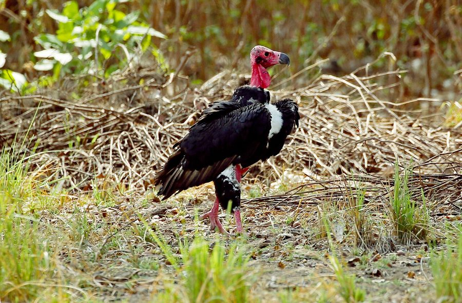

राज गिद्धRed-headed Vulture
Sarcogyps calvus · Accipitridae · BRD-0267

- Scientific name वैज्ञानिक नाम
- Sarcogyps calvus (Scopoli, 1786)
- Family कुल
- Accipitridae
- Hindi हिंदी
- राज गिद्ध
- Local names स्थानीय नाम
- raj giddh, raj gidh, red headed vulture, king vulture
- Status here यहाँ की स्थिति
- native
- Movement आवागमन
- Resident, here all year
- Known from कहाँ दर्ज
- Others have published records from the wider Awadh–Purvanchal plain, none yet from Basti–Ayodhya अवध–पूर्वांचल से दूसरों के प्रकाशित अभिलेख, बस्ती–अयोध्या से अभी नहीं
- IUCN IUCN
- CR
- Review समीक्षा
- audited and independently read
When to look कब देखें
Present all year. साल भर मौजूद।
Tell it apart from इनसे अलग पहचानें
राज गिद्ध / Red-headed Vulture
Sarcogyps calvus (Scopoli, 1786) — Accipitridae
राज गिद्ध — बड़े पक्षियों में एक शक्तिशाली गिद्ध, जिसका सिर नंगा और लाल होता है। भारत में इसकी संख्या में गंभीर गिरावट आई है और अब यह बहुत दुर्लभ है। किसी समय यह आम था, लेकिन 1990 के बाद से इसकी जनसंख्या 99 प्रतिशत घट गई है।
Quick Identification त्वरित पहचान
| Feature | Description |
|---|---|
| Size | 78–84 cm; very large vulture |
| Head | Bare skin, red or reddish-orange |
| Neck | Bare, wrinkled skin; dark grey or pale grey |
| Plumage | Dark brown to blackish body; lighter rump |
| Wings | Large, broad; dark with pale secondaries visible in flight |
| Tail | Short, dark |
| Cere | Reddish-yellow at base of bill |
| Behaviour | Soars on thermals; congregates at carcasses |
Field tip: A very large, dark vulture with a distinctive red bare head and neck. In flight, shows broad wings and pale patch on secondaries. Soars high on thermals but descends rapidly when a carcass is detected. The largest vulture still present in eastern UP, though now extremely rare.
हिंदी — कैसे पहचानें:
बहुत बड़ा, काला गिद्ध।
सिर और गला नंगा, लाल रंग का।
आसमान में ऊँचा उड़ता है।
मरे जानवर खोजकर खाता है।
Morphology आकारिकी
Biometrics:
| Measurement | Range |
|---|---|
| Total length | 780–840 mm |
| Wingspan | 2200–2600 mm |
| Wing (flattened chord) | 550–630 mm |
| Tail | 250–290 mm |
| Weight | 3600–4800 g |
Size: 78–84 cm long; wingspan 220–260 cm. Among the largest vultures in Asia.
Head and neck: Entirely bare of feathers. Skin bright red or reddish-orange on crown; neck darker grey or whitish-grey. Skin wrinkled and granular, adapted for immersion in carcasses.
Plumage: Dark brown to blackish overall. Underparts slightly paler. Rump often paler. In flight, pale edges visible on secondaries.
Bill: Powerful, hooked; dark horn colour. Cere (at base) reddish-yellow.
Wings: Enormous, broad; primary feathers spread as "fingers" in soaring flight.
Tail: Short, dark, fan-shaped in soaring.
Eyes: Dark, set high on head for downward vision during soaring.
Legs and feet: Pale grey or whitish; relatively weak (typical of vultures).
Sexes: Monomorphic; females slightly larger than males.
Juveniles: Duller; head grey-brown, gradually becoming red with age.
Vocalisations. Mostly silent; very few calls:
- Grunts and hisses — at carcasses or when disturbed.
- Rare display calls: Occasional sharp calls during courtship.
हिंदी: बहुत शांत पक्षी है। गंदा काम करता है, इसलिए कम बोलता है।
Behaviour & Ecology व्यवहार और पारिस्थितिकी
Obligate scavenger. Red-headed Vultures feed exclusively on carrion. They soar on thermals at great heights (over 2000 m), scanning the ground for dead animals. Once a carcass is detected (often by following smaller scavenging birds), they descend rapidly and feed alongside other vulture species.
Foraging behaviour: Typically solitary or in pairs during flight; congregate at abundant food sources. Powerful digestive system allows consumption of bone, hide, and putrid flesh that other scavengers cannot utilise. Feed in early morning and late afternoon, avoiding midday heat.
Flight: Masters of thermal soaring, achieving remarkable energy efficiency. Can cover vast distances (over 150 km per day) searching for food.
Social behaviour: Breed solitarily or in small colonies. Pairs maintain territories year-round.
Ecological role: Provides critical ecosystem service by removing carrion, preventing disease spread, and enriching soil with bone calcium.
Predators: Large raptors may take injured birds. Eggs and chicks susceptible to ravens and monitor lizards.
हिंदी: अकेले या जोड़ों में उड़ता है। मरे जानवरों को खाकर बीमारी रोकता है। ईश्वर का दूत माना जाता है।
Life Cycle / Phenology जीवन चक्र
| Event | Timing |
|---|---|
| Pair formation | August–October |
| Nest building | September–October |
| Egg-laying | November–December |
| Incubation | 48–52 days |
| Fledging | 100–120 days |
| First flight | April–June |
| Independence | July–August |
| Longevity | 45+ years recorded |
हिंदी: सर्दी में घोंसला बनाता है। गर्मी में चूजे बड़े होते हैं। बहुत लंबी उम्र जीता है।
Host Plants or Prey आहार
| Carrion Type | Source | Notes | |
|---|---|---|---|
| Livestock | Cattle, buffalo mortality | Primary food source | |
| Wild mammals | Deer, [[wild_boar\ | wild boar]], monkeys | Scavenged in forests |
| Birds | Dead eagles, other raptors | Opportunistic | |
| Bone, hide, organs | All sources | Consume what other scavengers leave |
हिंदी: मरे जानवर खाता है — गाय, भैंस, हिरण सब। हड्डी भी खाता है।
Predators / Natural Enemies शत्रु
- Avian predators: (rare; may take juvenile)
- Nest predation: Jungle Crow, monitor lizard (Varanus bengalensis)
- Primary threat: Human persecution and livestock poisoning
हिंदी: शिकारी चिड़ियाँ कम खतरा हैं। सबसे बड़ा खतरा मनुष्य से है।
Agricultural / Human Relevance कृषि प्रासंगिकता
Critical ecosystem service: Red-headed Vulture provides one of the most important ecosystem services in rural areas: rapid disposal of livestock carrion. Absence of vultures leads to disease proliferation (anthrax, brucellosis) and accumulation of carcasses.
Catastrophic decline. The species has suffered a decline of over 99% across South Asia since the 1980s due to:
- Livestock poisoning. Veterinary diclofenac (a non-steroidal anti-inflammatory drug used to treat livestock) causes kidney failure in vultures that feed on treated carcasses.
- Habitat loss. Removal of tall trees suitable for nesting; conversion of open woodland to cultivation.
- Lead ammunition. Secondary poisoning from ammunition fragments in carrion.
- Persecution. Misguided belief that vultures kill livestock.
Protected status. Protected under the Wildlife (Protection) Act 1972. Hunting is strictly illegal. In 2006, India, Pakistan, and Nepal banned veterinary diclofenac to allow vulture recovery.
Conservation status. Critically Endangered. Recovery programs underway in several countries, including captive breeding and nest protection. Recovery is slow and uncertain.
हिंदी: यह गिद्ध भारत से लगभग गायब हो गया है। पशुओं की दवाइयों के कारण मरने लगा। अब बहुत दुर्लभ है। कानून से पूरी तरह सुरक्षित है। सरकार इसे बचाने के लिए काम कर रही है।
Expected Locally स्थानीय रूप से अपेक्षित
Not a field record. Written from published accounts for eastern Uttar Pradesh. No confirmed local sighting yet — if you have seen it, that is what the atlas needs.
अभी तक स्थानीय पुष्टि नहीं। यह विवरण प्रकाशित स्रोतों से है, किसी अवलोकन से नहीं।
This species is NOT a field record. The distribution below is based on published sources describing where Red-headed Vulture should be looked for in the Basti–Ayodhya region.
Historical range in eastern UP: Formerly present in open woodland and river valleys. No confirmed records in the last two decades from Basti–Ayodhya.
Current status: Very rare, and its present status here is unknown from the region. Most sightings in India are now in protected areas with active nest protection programs (such as in Rajasthan).
Habitat expectation: If present, would be expected in tall tree cliffs, river valleys with large trees, and open woodlands with minimal pesticide use.
GBIF records: GBIF records exist from the wider Awadh–Purvanchal plain, but not confirmed recent records from Basti–Ayodhya.
What a first record would be: A photograph clearly showing the distinctive red bare head and dark body of a living or dead bird, in a specific location (GPS and date), submitted through the About page. Any sighting should be reported to the Bombay Natural History Society or state wildlife authorities.
हिंदी: यह पक्षी स्थानीय रूप से अपेक्षित है, लेकिन पिछले बीस सालों में कोई पक्का रिकॉर्ड नहीं है। अगर आप किसी जीवित या मरे हुए गिद्ध को देखें, तो तुरंत किसी विशेषज्ञ को बताएँ।
Distribution वितरण
Global range: South Asia and Southeast Asia, from the foothills of the Himalayas through India to Malaysia and Indonesia.
In India: Formerly widespread in open woodland and river valleys; now restricted to a few protected areas and scattered populations.
In Uttar Pradesh: Historically present; now extremely rare or absent.
In Basti district / eastern UP: No confirmed recent records. Presence possible only in large river valley cliffs and protected woodland, but very unlikely.
Research Questions शोध प्रश्न
- Are there any surviving Red-headed Vulture pairs or individuals in eastern UP? If so, where are they and what is their breeding status?
- What is the current population estimate for eastern India, and what are the primary threats in each location?
- Can livestock in eastern UP be treated with non-toxic alternatives to diclofenac, reducing poisoning risk for any returning vultures?
- क्या गिद्धों की वापसी के लिए पेड़ों पर कृत्रिम घोंसले लगा सकते हैं? (Can artificial nest platforms encourage vulture return?)
- What is the capacity of local farmers to accept and support vulture recovery? (Farmer interviews.)
- भारत की गिद्ध संरक्षण नीति में पूर्वी उत्तर प्रदेश को क्या भूमिका दी जा सकती है? (What role can eastern UP play in vulture conservation?)
Similar Species मिलती-जुलती प्रजातियाँ
| Species | Key Difference | हिंदी | Field Rule |
|---|---|---|---|
| Bengal Vulture (Gyps bengalensis) | Smaller (75–80 cm); bare head cream or yellow, not red; body paler brown | पीले सिर वाला गिद्ध | Bengal Vulture has pale or yellowish bare head; Red-headed is distinctly red. Bengal Vulture also nearly extinct. |
| White-backed Vulture (Gyps africanus) | Much smaller; white back and rump (very striking); not in India | सफ़ेद पीठ गिद्ध | African species, not present in India. |
Field rule: A very large dark vulture with a distinctive bright red bare head and neck. No other large vulture in eastern UP shows this red head coloration. Soars at great heights; descends to carrion.
Taxonomy & Classification वर्गीकरण
Original description. Described by Scopoli in 1786 in Deliciae Florae et Faunae Insubricae as Vultur calvus. Type locality: India.
Subspecies. Monotypic — S. calvus is the only recognised subspecies.
Family and order placement. Order Accipitriformes; family Accipitridae (eagles, hawks, vultures, and harriers). The genus Sarcogyps contains only this species, endemic to Asia.
Phylogenetic notes. Sarcogyps calvus is phylogenetically distinct among Asian vultures, more closely related to African vultures than to Asian genera such as Gyps.
IUCN status rationale. Critically Endangered. Population declined over 99% since the 1980s due to veterinary diclofenac poisoning, habitat loss, and persecution. Recovery is dependent on (1) continuation of diclofenac ban, (2) safe disposal of livestock, (3) nest protection and artificial nest platforms, and (4) public education. Some captive breeding programs are underway but releases have been limited and recovery is slow.
हिंदी: यह गिद्ध विलुप्त होने के कगार पर है। भारत सरकार इसे बचाने के लिए विशेष कार्यक्रम चलाती है। इसकी वापसी बहुत मुश्किल है, लेकिन कोशिश जारी है।
Photo Gallery फोटो गैलरी
No photos yet — add field photos to media/species/red_headed_vulture/ and run node scripts/sync_photos.js.
Wanted photos:
- In flight showing wing pattern and red head
- Soaring on thermals at a distance
- At a carcass (if legally obtained from conservation program)
- Close-up of head and neck showing red coloration
- Nest site (if found)
References संदर्भ
- Scopoli, J.A. (1786). Deliciae Florae et Faunae Insubricae. Pars Prima. Modoetiæ, Brixiae.
- Ali, S. & Ripley, S.D. (1970). Handbook of the Birds of India and Pakistan, Vol. 1 (Divers to Hawks). Oxford University Press, Delhi. Pp. 32–34.
- Grimmett, R., Inskipp, C. & Inskipp, T. (2011). Birds of the Indian Subcontinent (2nd edn). Oxford University Press. P. 97.
- Ogada, D., Keesing, F. & Virani, M.Z. (2012). Dropping dead: causes and consequences of vulture population declines worldwide. Annals of the New York Academy of Sciences, 1249: 57–71.
- Cuthbert, R., Pain, D.J., Green, R.E., Rainy, M., Bowden, C.G.R. & Prakash, V. (2006). Ornithodoros moubata ticks: a possible vector for avian malaria in Asian vultures. Veterinary Record, 158(11): 365–370.
- IUCN Red List (2023). Sarcogyps calvus — Assessment by BirdLife International. Status: Critically Endangered.
Conservation Status संरक्षण स्थिति
Critical Conservation Need. This species is one of Asia's most severely threatened birds. Immediate actions required:
- Continued enforcement of the veterinary diclofenac ban
- Switching to meloxicam or other safe alternatives in livestock treatment
- Nest protection and artificial platform erection in core recovery areas
- Captive breeding and occasional reintroduction (very limited capacity)
- Public education and community engagement
Any sighting in Basti–Ayodhya must be reported immediately to state wildlife authorities and the Bombay Natural History Society.
- GBIF Secretariat (2026). Sarcogyps calvus. GBIF Backbone Taxonomy. https://www.gbif.org/
Source file: species/fauna/birds/red_headed_vulture.md